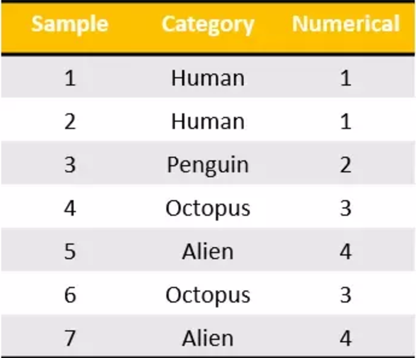
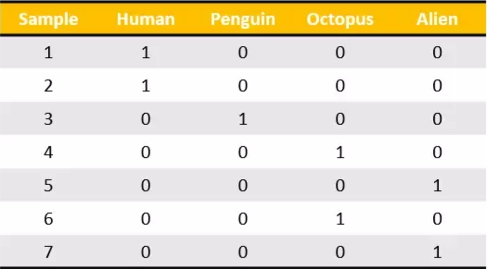
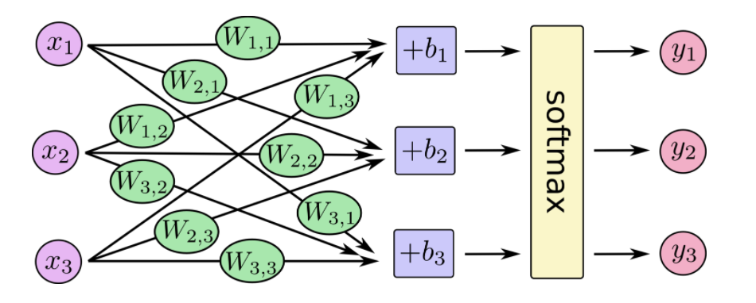

ANN网络分析
Mnist手写数字识别
Mnist数据集可以从官网下载，网址： http://yann.lecun.com/exdb/mnist/ 下载下来的数据集被分成两部分：55000行的训练数据集（mnist.train）和10000行的测试数据集（mnist.test）。每一个MNIST数据单元有两部分组成：一张包含手写数字的图片和一个对应的标签。我们把这些图片设为“xs”，把这些标签设为“ys”。训练数据集和测试数据集都包含xs和ys，比如训练数据集的图片是 mnist.train.images ，训练数据集的标签是 mnist.train.labels。

我们可以知道图片是黑白图片，每一张图片包含28像素X28像素。我们把这个数组展开成一个向量，长度是 28x28 = 784。因此，在MNIST训练数据集中，mnist.train.images 是一个形状为 [60000, 784] 的张量。

MNIST中的每个图像都具有相应的标签，0到9之间的数字表示图像中绘制的数字。用的是one-hot编码

one-hot编码
独热编码将分类特征转换为使用分类和回归算法更好的格式，我们看下面这个例子。有七个分类数据的样本输入属于四类。现在，我可以将这些编码到我所做的这些名义值，但是从机器学习的角度来看这是不合适的。我们不能说“企鹅”的类别大于或小于“人”。那么他们只是单纯的序数值，而不是名义值。

我们做的是为每个类别生成一个布尔列。这些列中只有一列可以为每个样本取值1。因此，术语一个热编码。

tf.one_hot
tf.one_hot(indices, depth, on_value=None, off_value=None, axis=None, dtype=None, name=None)
- indices 在独热编码中位置，即数据集标签
- depth 张量的深度，即类别数
indices = [0, 1, 2, 1]
depth = 3
[[1., 0., 0.],
[0., 1., 0.],
[0., 0., 1.],
[1., 1., 0.]]
SoftMax回归
MNIST中的每个图像都是零到九之间的手写数字。所以给定的图像只能有十个可能的东西。我们希望能够看到一个图像，并给出它是每个数字的概率。例如，我们的模型可能会看到一个九分之一的图片，80％的人肯定它是一个九，但是给它一个5％的几率是八分之一（因为顶级循环），并有一点概率所有其他，因为它不是100％确定。这是一个经典的情况，其中softmax回归是一种自然简单的模型。如果要将概率分配给几个不同的东西之一的对象，softmax是要做的事情，因为softmax给出了一个[0,1]之间的概率值加起来为1的列表。稍后，当我们训练更复杂型号，最后一步将是一层softmax。
那么我们通常说的激活函数有很多，我们这个使用softmax函数.softmax模型可以用来给不同的对象分配概率。即使在之后，我们训练更加精细的模型时，最后一步也需要用softmax来分配概率。这里的softmax可以看成是一个激励（activation）函数，把我们定义的线性函数的输出转换成我们想要的格式，也就是关于10个数字类的概率分布。因此，给定一张图片，它对于每一个数字的吻合度可以被softmax函数转换成为一个概率值。
softmax回归有两个步骤：首先我们将我们的输入的证据加在某些类中，然后将该证据转换成概率。每个输出的概率，对应着独热编码中具体的类别。
下面是softmax的公式：
在神经网络中，整个过程如下：

也就是最后的softmax模型，用数学式子表示：
损失计算-交叉熵损失
我们前面学习过了一种计算误差损失，预测值与标准值差的平方和。不过在这里我们不能再使用这个方式，我们的输出值是概率并且还有标签。那么就需要一种更好的方法形容这个分类过程的好坏。这里就要用到交叉熵损失。
确定模型损失的一个非常常见的非常好的功能称为“交叉熵”。交叉熵来源于对信息理论中的信息压缩代码的思考，但是从赌博到机器学习在很多领域都是一个重要的思想。它定义为
它表示的是目标标签值与经过权值求和过后的对应类别输出值
tf.nn.softmax_cross_entropy_with_logits
tf.nn.softmax_cross_entropy_with_logits(_sentinel=None, labels=None, logits=None, dim=-1, name=None)
计算logits与labels之间的softmax交叉熵损失，该函数已经包含了softmax功能，logits和labels必须有相同的形状[batch_size, num_classes]和相同的类型(float16, float32, or float64)。
- labels 独热编码过的标签值
- logits 没有log调用过的输入值
- 返回 交叉熵损失列表
tf.nn.softmax_cross_entropy_with_logits(labels=y_label, logits=y))
实现神经网络模型
获取数据
tensorflow提供给我们下载mnist数据集的接口，需要指定下载目录
from tensorflow.examples.tutorials.mnist import input_data
# 输入数据
mnist = input_data.read_data_sets(FLAGS.data_dir, one_hot=True)
计算数据
我们需要生成权重和偏置初始值，为了随时能够接收输入值，需要构造输入占位符
# 建立输入数据占位符
x = tf.placeholder(tf.float32, [None, 784])
#初始化权重和偏置
W = tf.Variable(tf.zeros([784, 10]))
b = tf.Variable(tf.zeros([10]))
# 输出结果
y = tf.matmul(x, W) + b
梯度下降优化与训练
我们知道我们想要我们的模型做什么，很容易让TensorFlow训练它来做到这一点。因为TensorFlow知道计算的整个图形，它可以自动使用反向传播算法来有效地确定变量如何影响您要求最小化的损失。那么它可以应用您选择的优化算法来修改变量并减少损失。
train_step = tf.train.GradientDescentOptimizer(0.5).minimize(cross_entropy)
我们每次提供一部分值，然后多次进行训练train_step，使之不断的更新
# 训练
for i in range(1000):
print("第%d次训练"%(i))
batch_xs, batch_ys = mnist.train.next_batch(100)
sess.run(train_step, feed_dict={x: batch_xs, y_label: batch_ys})
模型正确率评估
有了目标值标签以及我们模型的输出值，就可以比较两者相同率，我们使用tf.argmax，这是一个非常有用的功能，它给出沿某个轴的张量中最高条目的索引
correct_prediction = tf.equal(tf.argmax(y, 1), tf.argmax(y_label, 1))
然后这给了我们一个布尔的列表。为了确定哪个部分是正确的，我们转换为浮点数，然后取平均值。例如， [True, False, True, True]会变成[1,0,1,1]哪一个0.75
accuracy = tf.reduce_mean(tf.cast(correct_prediction, tf.float32))
跟踪变量
同时为了在tensorboard更好的观察变量的变化，我们去进行节点汇总操作,我们观察损失、准确率以及高维变量的变化
tf.summary.scalar("loss",cross_entropy)
tf.summary.scalar("accuracy", accuracy)
tf.summary.histogram("W",W)
完整代码：
from __future__ import absolute_import
from tensorflow.examples.tutorials.mnist import input_data
import tensorflow as tf
FLAGS = tf.app.flags.FLAGS
tf.app.flags.DEFINE_string('data_dir', '/tmp/tensorflow/mnist/input_data',
"""数据集目录""")
tf.app.flags.DEFINE_integer('max_steps', 2000,
"""训练次数""")
tf.app.flags.DEFINE_string('summary_dir', '/tmp/summary/mnist/train',
"""事件文件目录""")
def main(sess):
# 输入数据
mnist = input_data.read_data_sets(FLAGS.data_dir, one_hot=True)
# 建立输入数据占位符
x = tf.placeholder(tf.float32, [None, 784])
# 初始化权重和偏置
W = tf.Variable(tf.zeros([784, 10]))
b = tf.Variable(tf.zeros([10]))
# 输出结果y
y = tf.matmul(x, W) + b
# 建立类别占位符
y_label = tf.placeholder(tf.float32, [None, 10])
# 计算交叉熵损失平均值
cross_entropy = tf.reduce_mean(tf.nn.softmax_cross_entropy_with_logits(labels=y_label, logits=y))
# 生成优化损失操作
train_step = tf.train.GradientDescentOptimizer(0.5).minimize(cross_entropy)
# 比较结果
correct_prediction = tf.equal(tf.argmax(y, 1), tf.argmax(y_label, 1))
# 计算正确率平均值
accuracy = tf.reduce_mean(tf.cast(correct_prediction, tf.float32))
tf.summary.scalar("loss",cross_entropy)
tf.summary.scalar("accuracy", accuracy)
tf.summary.histogram("W",W)
tf.global_variables_initializer().run()
# 合并所有摘要
merged = tf.summary.merge_all()
summary_writer = tf.summary.FileWriter(FLAGS.summary_dir, graph=sess.graph)
# 训练
for i in range(1000):
print("第%d次训练"%(i))
batch_xs, batch_ys = mnist.train.next_batch(100)
sess.run(train_step, feed_dict={x: batch_xs, y_label: batch_ys})
print(sess.run(accuracy,feed_dict={x: batch_xs, y_label: batch_ys}))
summary = sess.run(merged,feed_dict={x: batch_xs, y_label: batch_ys})
summary_writer.add_summary(summary,i)
# 模型在测试数据的准确率
correct_prediction = tf.equal(tf.argmax(y, 1), tf.argmax(y_label, 1))
test_accuracy = tf.reduce_mean(tf.cast(correct_prediction, tf.float32))
print("测试数据准确率：")
print(sess.run(test_accuracy, feed_dict={x: mnist.test.images,y_label: mnist.test.labels}))
if __name__ == '__main__':
with tf.Session() as sess:
main(sess)